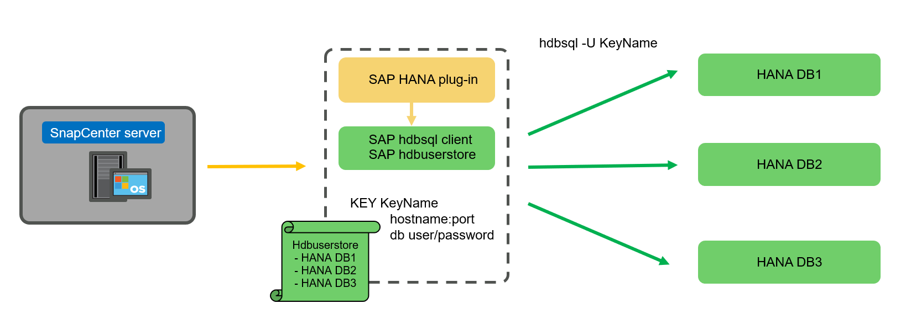
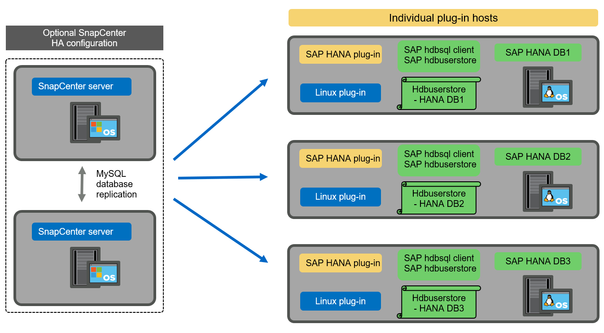
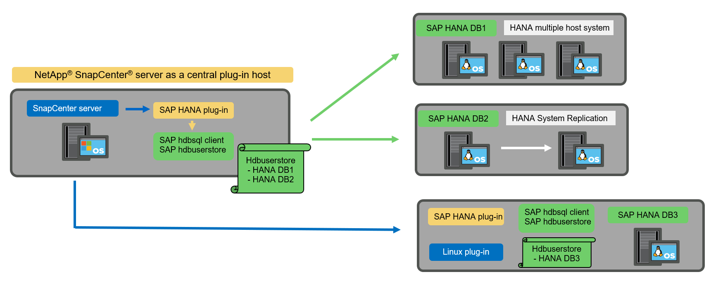
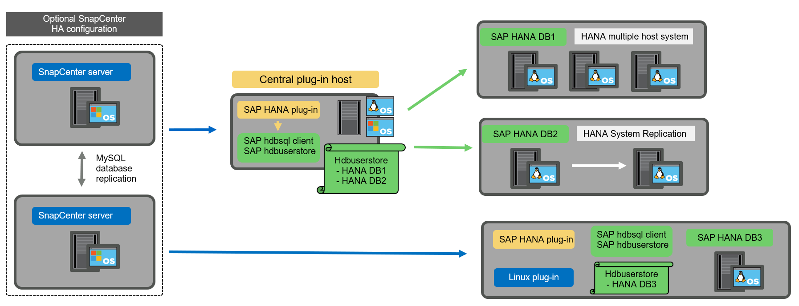
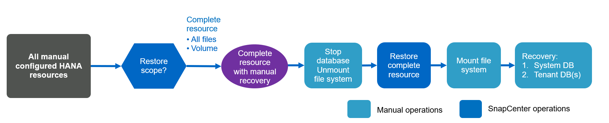

Dokumentationsänderungen beantragen
Dokumentationsänderungen beantragen In GitHub bearbeiten
In GitHub bearbeiten Leitfaden für Beitragende
Leitfaden für BeitragendeSnapCenter-Konzepte und Best Practices
Beitragende
Optionen und Konzepte für die Konfiguration von SAP HANA Ressourcen
Mit SnapCenter kann die Konfiguration von SAP HANA Datenbankressourcen mit zwei verschiedenen Ansätzen durchgeführt werden.
-
Manuelle Ressourcenkonfiguration. HANA Ressourcen- und Speicherplatzinformationen müssen manuell bereitgestellt werden.
-
Automatische Erkennung von HANA-Ressourcen. Automatische Erkennung vereinfacht die Konfiguration von HANA-Datenbanken in SnapCenter und ermöglicht automatisiertes Restore und Recovery.
Dabei ist es wichtig zu wissen, dass nur HANA-Datenbankressourcen in SnapCenter aktiviert sind, die automatisch erkannt wurden, für automatisierte Wiederherstellungen und Recoverys. HANA-Datenbankressourcen, die in SnapCenter manuell konfiguriert sind, müssen nach einer Wiederherstellung in SnapCenter manuell wiederhergestellt werden.
Andererseits wird die automatische Erkennung mit SnapCenter nicht für alle HANA-Architekturen und Infrastrukturkonfigurationen unterstützt. Daher erfordern HANA-Landschaften einen gemischten Ansatz, bei dem für einige HANA-Systeme (HANA mehrere Hostsysteme) eine manuelle Ressourcenkonfiguration erforderlich ist, und alle anderen Systeme können mithilfe der automatischen Erkennung konfiguriert werden.
Die automatische Erkennung und die automatisierte Wiederherstellung und Wiederherstellung hängen von der Möglichkeit ab, OS-Befehle auf dem Datenbank-Host auszuführen. Beispiele hierfür sind die Ermittlung des Platzbedarfs für Filesystem und Storage sowie die Unmount-, Mount- oder LUN-Erkennung. Diese Vorgänge werden mit dem SnapCenter Linux Plug-in ausgeführt, das gemeinsam mit dem HANA-Plug-in automatisch implementiert wird. Daher ist es Voraussetzung, das HANA-Plug-in auf dem Datenbank-Host zu implementieren, um automatische Erkennung sowie automatisiertes Restore und Recovery zu ermöglichen. Es ist auch möglich, die automatische Erkennung nach der Bereitstellung des HANA-Plug-ins auf dem Datenbank-Host zu deaktivieren. In diesem Fall handelt es sich bei der Ressource um eine manuell konfigurierte Ressource.
In der folgenden Abbildung sind die Abhängigkeiten zusammengefasst. Weitere Einzelheiten zu den HANA-Implementierungsoptionen finden Sie im Abschnitt „Bereitstellungsoptionen für das SAP HANA-Plug-in“.


|
Die HANA- und Linux-Plug-ins sind derzeit nur für Systeme mit Intel-Technik verfügbar. Falls die HANA-Datenbanken auf IBM Power Systems laufen, muss ein zentraler HANA-Plug-in-Host verwendet werden. |
Unterstützte HANA-Architekturen für automatisches Discovery und automatisiertes Recovery
Mit SnapCenter werden automatische Erkennung und automatisierte Wiederherstellung und Recovery für die meisten HANA-Konfigurationen unterstützt, mit der Ausnahme, dass für HANA mehrere Host-Systeme eine manuelle Konfiguration erforderlich ist.
Die folgende Tabelle zeigt die unterstützten HANA-Konfigurationen für die automatische Erkennung.
| HANA-Plug-in installiert auf: | HANA-Architektur | HANA-Systemkonfiguration | Infrastruktur |
|---|---|---|---|
HANA Datenbank-Host |
Einzelner Host |
|
|
|
|
HANA MDC-Systeme mit mehreren Mandanten werden für automatische Erkennung unterstützt, nicht jedoch für automatisiertes Restore und Recovery mit der aktuellen SnapCenter-Version. |
Unterstützte HANA-Architekturen für manuelle HANA-Ressourcenkonfiguration
Die manuelle Konfiguration von HANA-Ressourcen wird für alle HANA-Architekturen unterstützt, erfordert jedoch einen zentralen HANA-Plug-in-Host. Der zentrale Plug-in-Host kann der SnapCenter-Server selbst oder ein separater Linux- oder Windows-Host sein.
|
|
Wenn das HANA-Plug-in auf dem HANA-Datenbank-Host implementiert wird, wird die Ressource standardmäßig automatisch erkannt. Die automatische Erkennung kann für einzelne Hosts deaktiviert werden, sodass das Plug-in bereitgestellt werden kann. Beispielsweise auf einem Datenbank-Host mit aktivierter HANA-Systemreplizierung und einer SnapCenter-Version < 4.6, bei der die automatische Erkennung nicht unterstützt wird. Weitere Informationen finden Sie im Abschnitt "„Automatische Erkennung auf dem HANA-Plug-in-Host deaktivieren.“" |
Die folgende Tabelle zeigt die unterstützten HANA-Konfigurationen für die manuelle HANA-Ressourcenkonfiguration.
| HANA-Plug-in installiert auf: | HANA-Architektur | HANA-Systemkonfiguration | Infrastruktur |
|---|---|---|---|
Zentraler Plug-in-Host (SnapCenter-Server oder separater Linux-Host) |
Single oder mehrere Hosts |
|
|
Implementierungsoptionen für das SAP HANA Plug-in
Die folgende Abbildung zeigt die logische Ansicht und die Kommunikation zwischen dem SnapCenter Server und den SAP HANA Datenbanken.
Der SnapCenter-Server kommuniziert über das SAP HANA Plug-in mit den SAP HANA Datenbanken. Das SAP HANA Plug-in nutzt die SAP HANA hdbsql-Client-Software, um SQL-Befehle an die SAP HANA-Datenbanken auszuführen. Der SAP HANA hdbuserstore wird verwendet, um die Benutzeranmeldeinformationen, den Hostnamen und die Portinformationen für den Zugriff auf die SAP HANA-Datenbanken bereitzustellen.

|
|
Das SAP HANA-Plug-in und die SAP-hdbsql-Client-Software, zu der auch das hdbuserstore-Konfigurationstool gehört, müssen auf demselben Host zusammen installiert werden. |
Der Host kann entweder der SnapCenter-Server selbst, ein separater zentraler Plug-in-Host oder die einzelnen SAP HANA Datenbank-Hosts sein.
Hochverfügbarkeit mit SnapCenter Server
SnapCenter kann in einer HA-Konfiguration mit zwei Nodes eingerichtet werden. In dieser Konfiguration wird ein Load Balancer (z. B. F5) unter Verwendung einer virtuellen IP-Adresse verwendet, die auf den aktiven SnapCenter-Host verweist. Das SnapCenter-Repository (die MySQL-Datenbank) wird von SnapCenter zwischen den beiden Hosts repliziert, sodass die SnapCenter-Daten immer synchron sind.
SnapCenter Server HA wird nicht unterstützt, wenn das HANA-Plug-in auf dem SnapCenter-Server installiert ist. Wenn Sie SnapCenter in einer HA-Konfiguration einrichten möchten, installieren Sie das HANA Plug-in nicht auf dem SnapCenter Server. Weitere Informationen zur SnapCenter HA finden Sie unter diesem "NetApp Knowledge Base Seite".
SnapCenter Server als zentraler HANA Plug-in-Host
Die folgende Abbildung zeigt eine Konfiguration, in der der SnapCenter-Server als zentraler Plug-in-Host verwendet wird. Das SAP HANA Plug-in und die SAP hdbsql-Client-Software sind auf dem SnapCenter-Server installiert.

Da das HANA-Plug-in mit den gemanagten HANA-Datenbanken über den hdbclient über das Netzwerk kommunizieren kann, müssen keine SnapCenter-Komponenten auf den einzelnen HANA-Datenbank-Hosts installiert werden. SnapCenter kann die HANA-Datenbanken über einen zentralen HANA Plug-in-Host sichern, auf dem alle Benutzerspeicherschlüssel für die gemanagten Datenbanken konfiguriert sind.
Um dagegen die Workflow-Automatisierung für die automatische Erkennung, die Automatisierung von Wiederherstellung und Wiederherstellung sowie die Aktualisierung von SAP Systemen zu verbessern, müssen auf dem Datenbank-Host SnapCenter Komponenten installiert werden. Bei Verwendung eines zentralen HANA-Plug-in-Hosts sind diese Funktionen nicht verfügbar.
Darüber hinaus kann die Hochverfügbarkeit des SnapCenter-Servers mit der in-Build-HA-Funktion nicht verwendet werden, wenn das HANA-Plug-in auf dem SnapCenter-Server installiert ist. Hochverfügbarkeit kann mit VMware HA erzielt werden, wenn der SnapCenter Server auf einer VM innerhalb eines VMware Clusters ausgeführt wird.
Separater Host als zentraler HANA Plug-in-Host
Die folgende Abbildung zeigt eine Konfiguration, in der ein separater Linux-Host als zentraler Plug-in-Host verwendet wird. In diesem Fall sind das SAP HANA Plug-in und die SAP hdbsql-Client-Software auf dem Linux-Host installiert.
|
|
Der separate zentrale Plug-in-Host kann auch ein Windows-Host sein. |

Die gleiche Einschränkung hinsichtlich der im vorherigen Abschnitt beschriebenen Funktionsverfügbarkeit gilt auch für einen separaten zentralen Plug-in Host.
Bei dieser Implementierungsoption kann der SnapCenter Server jedoch mit den in-Build-HA-Funktionen konfiguriert werden. Auch der zentrale Plug-in-Host muss HA sein, beispielsweise durch Verwendung einer Linux-Cluster-Lösung.
Auf einzelnen HANA-Datenbank-Hosts implementiertem HANA Plug-in
Die folgende Abbildung zeigt eine Konfiguration, in der das SAP HANA Plug-in auf jedem SAP HANA Datenbank-Host installiert ist.

Wird das HANA-Plug-in auf jedem einzelnen HANA-Datenbank-Host installiert, sind alle Funktionen verfügbar, beispielsweise automatische Erkennung, automatisiertes Restore und Recovery. Zudem kann der SnapCenter Server in einer HA-Konfiguration eingerichtet werden.
Plug-in-Implementierung für heterogene HANA
Wie zu Beginn dieses Abschnitts erläutert, erfordern einige HANA-Systemkonfigurationen, wie z. B. Systeme mit mehreren Hosts, einen zentralen Plug-in-Host. Daher erfordern die meisten SnapCenter Konfigurationen eine gemischte Implementierung des HANA Plug-ins.
NetApp empfiehlt, das HANA Plug-in auf dem HANA-Datenbank-Host für alle HANA-Systemkonfigurationen zu implementieren, die zur automatischen Erkennung unterstützt werden. Andere HANA-Systeme, wie beispielsweise Konfigurationen mit mehreren Hosts, sollten mit einem zentralen HANA Plug-in-Host gemanagt werden.
Die folgenden beiden Abbildungen zeigen gemischte Plug-in-Bereitstellungen entweder mit dem SnapCenter-Server oder einem separaten Linux-Host als zentralen Plug-in-Host. Der einzige Unterschied zwischen diesen beiden Implementierungen ist die optionale HA-Konfiguration.


Zusammenfassung und Empfehlungen
Im Allgemeinen empfiehlt NetApp die Implementierung des HANA Plug-ins auf jedem SAP HANA Host, um alle verfügbaren SnapCenter HANA Funktionen zu aktivieren und die Workflow-Automatisierung zu verbessern.
|
|
Die HANA- und Linux-Plug-ins sind derzeit nur für Systeme mit Intel-Technik verfügbar. Falls die HANA-Datenbanken auf IBM Power Systems laufen, muss ein zentraler HANA-Plug-in-Host verwendet werden. |
Für HANA-Konfigurationen, bei denen keine automatische Erkennung wie HANA-Konfigurationen mit mehreren Hosts unterstützt wird, muss ein zusätzlicher zentraler HANA-Plug-in-Host konfiguriert werden. Der zentrale Plug-in-Host kann der SnapCenter Server sein, wenn VMware HA für SnapCenter HA genutzt werden kann. Wenn Sie die im Build-HA-Funktion von SnapCenter verwenden möchten, verwenden Sie einen separaten Linux-Plug-in-Host.
In der folgenden Tabelle sind die verschiedenen Implementierungsoptionen aufgeführt.
| Implementierungsoptionen | Abhängigkeiten |
|---|---|
Zentrales HANA-Plug-in-Host-Plug-in auf SnapCenter-Server installiert |
Vorteile: * Single HANA Plug-in, zentrale HDB User Store-Konfiguration * auf einzelnen HANA-Datenbank-Hosts werden keine SnapCenter-Softwarekomponenten benötigt * Unterstützung aller HANA-Architekturen Cons: * Manuelle Ressourcenkonfiguration * Manuelle Wiederherstellung * keine Unterstützung für die Wiederherstellung einzelner Mandanten * Alle Pre- und Post-Script-Schritte werden auf dem zentralen Plug-in-Host ausgeführt * in-Build SnapCenter Hochverfügbarkeit nicht unterstützt * Kombination von SID und Mandantenname muss für alle verwalteten HANA-Datenbanken eindeutig sein * Protokoll Für alle gemanagten HANA-Datenbanken ist das Backup-Aufbewahrungsmanagement aktiviert/deaktiviert |
Zentrales HANA-Plug-in-Host-Plug-in auf separatem Linux- oder Windows-Server installiert |
Vorteile: * Single HANA Plug-in, zentrale HDB User Store-Konfiguration * Keine SnapCenter Software-Komponenten erforderlich auf einzelnen HANA-Datenbank-Hosts * Unterstützung aller HANA-Architekturen * in-Build SnapCenter Hochverfügbarkeit unterstützt Cons: * Manuelle Ressourcenkonfiguration * Manuelle Wiederherstellung * keine Unterstützung für die Wiederherstellung einzelner Mandanten * Alle Pre- und Post-Script-Schritte werden auf dem zentralen Plug-in-Host ausgeführt * Kombination von SID und Mandantenname muss für alle verwalteten HANA-Datenbanken eindeutig sein * Protokoll Backup Aufbewahrungsmanagement aktiviert/deaktiviert für alle gemanagt HANA-Datenbanken |
Auf dem HANA-Datenbankserver wird ein individuelles HANA-Plug-in-Host-Plug-in installiert |
Vorteile: * Automatische Bestandsaufnahme von HANA-Ressourcen * automatisierte Wiederherstellung und Recovery * Wiederherstellung einzelner Mandanten * vorab- und Postscript-Automatisierung für SAP Systemaktualisierung * in-Build SnapCenter Hochverfügbarkeit unterstützt * Backup-Aufbewahrungsmanagement für Protokoll kann für jede einzelne HANA-Datenbank aktiviert/deaktiviert werden Cons: * Nicht unterstützt für alle HANA-Architekturen. Zusätzlicher zentraler Plug-in-Host für HANA mehrere Host-Systeme erforderlich * HANA-Plug-in muss auf jedem HANA-Datenbank-Host implementiert werden |
Datensicherung Strategie
Vor der Konfiguration von SnapCenter und dem SAP HANA Plug-in muss die Datensicherungsstrategie auf Grundlage der RTO- und RPO-Anforderungen der verschiedenen SAP Systeme definiert werden.
Ein gemeinsamer Ansatz besteht in der Definition von Systemtypen wie Systemen für Produktion, Entwicklung, Test oder Sandbox. Alle SAP-Systeme des gleichen Systemtyps haben typischerweise die gleichen Datenschutzparameter.
Folgende Parameter müssen definiert werden:
-
Wie oft sollte ein Snapshot Backup ausgeführt werden?
-
Wie lange sollten Snapshot Kopien Backups auf dem Primärspeichersystem aufbewahrt werden?
-
Wie oft sollte eine Blockintegritätsprüfung ausgeführt werden?
-
Sollten die primären Backups auf einen externen Backup-Standort repliziert werden?
-
Wie lange sollten die Backups auf dem externen Backup-Storage aufbewahrt werden?
Die folgende Tabelle zeigt ein Beispiel für die Datenschutzparameter für die Produktion, Entwicklung und Prüfung des Systemtyps. Für das Produktionssystem wurde eine hohe Backup-Frequenz definiert und die Backups werden einmal pro Tag an einen externen Backup-Standort repliziert. Die Testsysteme haben niedrigere Anforderungen und keine Replikation der Backups.
| Parameter | Produktionssysteme auszuführen | Entwicklungssysteme | Testsysteme |
|---|---|---|---|
Sicherungshäufigkeit |
Alle 4 Stunden |
Alle 4 Stunden |
Alle 4 Stunden |
Primäre Aufbewahrung |
2 Tage |
2 Tage |
2 Tage |
Block-Integritätsprüfung |
Einmal in der Woche |
Einmal in der Woche |
Nein |
Replizierung an externe Backup-Standorte |
Einmal am Tag |
Einmal am Tag |
Nein |
Externe Backup-Aufbewahrung |
2 Wochen |
2 Wochen |
Keine Angabe |
In der folgenden Tabelle werden die Richtlinien aufgeführt, die für die Datensicherheitsparameter konfiguriert werden müssen.
| Parameter | RichtlinienLocalSnap | RichtlinieLocalSnapAndSnapVault | RichtlinienBlockIntegritätPrüfung |
|---|---|---|---|
Backup-Typ |
Auf Snapshot-Basis |
Auf Snapshot-Basis |
File-basiert |
Zeitplanhäufigkeit |
Stündlich |
Täglich |
Wöchentlich |
Primäre Aufbewahrung |
Anzahl = 12 |
Anzahl = 3 |
Anzahl = 1 |
SnapVault Replizierung |
Nein |
Ja. |
Keine Angabe |
Richtlinie LocalSnapshot Werden für Produktions-, Entwicklungs- und Testsysteme verwendet, um lokale Snapshot-Backups mit einer Aufbewahrung von zwei Tagen abzudecken.
In der Konfiguration für den Ressourcenschutz wird der Zeitplan für die Systemtypen unterschiedlich definiert:
-
Produktion. Zeitplan alle 4 Stunden.
-
Entwicklung Zeitplan alle 4 Stunden.
-
Test. Zeitplan alle 4 Stunden.
Richtlinie LocalSnapAndSnapVault Wird für die Produktions- und Entwicklungssysteme eingesetzt, um die tägliche Replizierung auf den externen Backup Storage zu decken.
In der Konfiguration für den Ressourcenschutz wird der Zeitplan für die Produktion und Entwicklung definiert:
-
Produktion. Zeitplan jeden Tag.
-
Entwicklung. Zeitplan jeden Tag.
Richtlinie BlockIntegrityCheck Wird für die Produktions- und Entwicklungssysteme verwendet, um die wöchentliche Blockintegritätsprüfung mithilfe eines dateibasierten Backups abzudecken.
In der Konfiguration für den Ressourcenschutz wird der Zeitplan für die Produktion und Entwicklung definiert:
-
Produktion. Zeitplan jede Woche.
-
Entwicklung. Zeitplan jede Woche.
Für jede einzelne SAP HANA Datenbank, die die externe Backup-Richtlinie nutzt, muss auf der Storage-Ebene eine Sicherungsbeziehung konfiguriert werden. Die Sicherungsbeziehung definiert, welche Volumes repliziert werden und wie die Aufbewahrung von Backups im externen Backup-Storage aufbewahrt wird.
Mit unserem Beispiel wird für jedes Produktions- und Entwicklungssystem im externen Backup-Storage eine Aufbewahrung von zwei Wochen definiert.
|
|
In unserem Beispiel sind die Sicherungsrichtlinien und die Aufbewahrung von SAP HANA-Datenbankressourcen und die nicht-Datenvolumen-Ressourcen nicht anders. |
Backup-Vorgänge
SAP führte die Unterstützung von Snapshot Backups für MDC-Mehrmandantensysteme mit HANA 2.0 SPS4 ein. SnapCenter unterstützt Snapshot-Backup-Vorgänge von HANA MDC-Systemen mit mehreren Mandanten. SnapCenter unterstützt außerdem zwei verschiedene Wiederherstellungsvorgänge eines HANA MDC-Systems. Sie können entweder das komplette System, die System-DB und alle Mandanten wiederherstellen oder nur einen einzelnen Mandanten wiederherstellen. Es gibt einige Voraussetzungen, wenn SnapCenter die Ausführung dieser Vorgänge ermöglicht.
In einem MDC-System ist die Mandantenkonfiguration nicht unbedingt statisch. Mandanten können hinzugefügt oder Mandanten gelöscht werden. SnapCenter kann sich nicht auf die Konfiguration verlassen, die beim Hinzufügen der HANA-Datenbank zu SnapCenter erkannt wird. SnapCenter muss wissen, welche Mandanten zum Zeitpunkt der Ausführung des Backup-Vorgangs verfügbar sind.
Um eine einzelne Mandanten-Wiederherstellung zu ermöglichen, muss SnapCenter wissen, welche Mandanten in jedem Snapshot-Backup enthalten sind. Zusätzlich muss die IT wissen, welche Dateien und Verzeichnisse zu den einzelnen Mandanten im Snapshot Backup gehören.
Somit müssen bei jedem Backup-Vorgang die Mandantendaten angezeigt werden. Dazu gehören die Mandantennamen und die entsprechenden Datei- und Verzeichnisinformationen. Diese Daten müssen in den Snapshot Backup-Metadaten gespeichert werden, um eine Wiederherstellung eines einzelnen Mandanten zu unterstützen. Der nächste Schritt ist der Snapshot-Backup-Vorgang selbst. Dieser Schritt umfasst den SQL-Befehl, um den HANA-Backup-Speicherpunkt auszulösen, das Storage-Snapshot-Backup und den SQL-Befehl zum Schließen des Snapshot-Vorgangs. Mit dem Befehl close aktualisiert die HANA-Datenbank den Backup-Katalog der System-DB und aller Mandanten.
|
|
SAP unterstützt keine Snapshot Backup-Vorgänge für MDC-Systeme, wenn ein oder mehrere Mandanten angehalten werden. |
Für das Aufbewahrungsmanagement von Daten-Backups und das HANA-Backup-Katalogmanagement muss SnapCenter die Kataloglösch-Operationen für die Systemdatenbank und alle Mandantendatenbanken ausführen, die im ersten Schritt identifiziert wurden. Auf dieselbe Weise für die Log-Backups muss der SnapCenter-Workflow auf jedem Mandanten laufen, der Teil des Backup-Vorgangs war.
Die folgende Abbildung zeigt einen Überblick über den Backup-Workflow.

Backup-Workflow für Snapshot-Backups der HANA-Datenbank
SnapCenter sichert die SAP HANA-Datenbank in folgender Reihenfolge:
-
SnapCenter liest die Liste der Mandanten aus der HANA-Datenbank vor.
-
SnapCenter liest die Dateien und Verzeichnisse für jeden Mandanten aus der HANA-Datenbank vor.
-
Informationen zu Mandanten werden bei diesem Backup in den Metadaten von SnapCenter gespeichert.
-
SnapCenter löst einen globalen, synchronisierten Speicherpunkt für Backups von SAP HANA aus, um ein konsistentes Datenbank-Image auf der Persistenzschicht zu erstellen.
Für ein SAP HANA MDC-System mit einem oder mehreren Mandanten wird ein synchronisierter globaler Backup-Speicherpunkt für die Systemdatenbank und für jede Mandantendatenbank erstellt. -
SnapCenter erstellt Storage-Snapshot-Kopien für alle Daten-Volumes, die für die Ressource konfiguriert sind. In unserem Beispiel einer HANA-Datenbank mit einem einzigen Host gibt es nur ein Daten-Volume. Bei einer SAP HANA Datenbank mit mehreren Hosts sind mehrere Daten-Volumes vorhanden.
-
Das Storage Snapshot Backup wird von SnapCenter im SAP HANA Backup-Katalog registriert.
-
SnapCenter löscht den Speicherpunkt für SAP HANA-Backups.
-
SnapCenter startet ein SnapVault- oder SnapMirror-Update für alle konfigurierten Daten-Volumes in der Ressource.
Dieser Schritt wird nur ausgeführt, wenn die ausgewählte Richtlinie eine SnapVault- oder SnapMirror-Replizierung umfasst. -
SnapCenter löscht die Storage-Snapshot-Kopien und die Backup-Einträge in seiner Datenbank sowie im SAP HANA Backup-Katalog basierend auf der Aufbewahrungsrichtlinie, die für Backups im primären Storage definiert ist. HANA-Backup-Katalogvorgänge werden für die Systemdatenbank und alle Mandanten ausgeführt.
Ist das Backup noch auf dem sekundären Speicher verfügbar, wird der SAP HANA-Katalogeintrag nicht gelöscht. -
SnapCenter löscht alle Log-Backups auf dem Filesystem und im SAP HANA-Backup-Katalog, die älter als die älteste im SAP HANA-Backup-Katalog identifizierte Datensicherung sind. Diese Vorgänge werden für die Systemdatenbank und alle Mandanten durchgeführt.
Dieser Schritt wird nur ausgeführt, wenn die allgemeine Ordnung der Protokollsicherung nicht deaktiviert ist.
Backup-Workflow für die Überprüfung der Blockintegrität
SnapCenter führt die Integritätsprüfung der Blöcke in folgender Reihenfolge aus:
-
SnapCenter liest die Liste der Mandanten aus der HANA-Datenbank vor.
-
SnapCenter löst einen dateibasierten Backup-Vorgang für die Systemdatenbank und jeden Mandanten aus.
-
SnapCenter löscht dateibasierte Backups in seiner Datenbank, im Filesystem und im SAP HANA-Backup-Katalog basierend auf der Aufbewahrungsrichtlinie, die für die Überprüfung der Blockintegrität definiert ist. Das Löschen des Backups im Filesystem und der HANA-Backup-Katalog werden für die Systemdatenbank und alle Mandanten durchgeführt.
-
SnapCenter löscht alle Log-Backups auf dem Filesystem und im SAP HANA-Backup-Katalog, die älter als die älteste im SAP HANA-Backup-Katalog identifizierte Datensicherung sind. Diese Vorgänge werden für die Systemdatenbank und alle Mandanten durchgeführt.
|
|
Dieser Schritt wird nur ausgeführt, wenn die allgemeine Ordnung der Protokollsicherung nicht deaktiviert ist. |
Management der Backup-Aufbewahrung und allgemeine Ordnung der Daten und Backup-Protokollierung
Das Management der Daten-Backup-Aufbewahrung und die allgemeine Ordnung der Backup-Protokollierung können in fünf Hauptbereiche unterteilt werden, einschließlich Aufbewahrungsmanagement von:
-
Lokale Backups im primären Storage
-
Dateibasierten Backups
-
Backups im sekundären Storage
-
Daten-Backups im SAP HANA Backup-Katalog
-
Protokollierung von Backups im SAP HANA Backup-Katalog und im Filesystem
Die folgende Abbildung bietet einen Überblick über die verschiedenen Workflows und die Abhängigkeiten jedes einzelnen Vorgangs. In den folgenden Abschnitten werden die verschiedenen Operationen im Detail beschrieben.

Aufbewahrungsmanagement von lokalen Backups auf dem Primärstorage
SnapCenter übernimmt die allgemeine Ordnung und Sauberkeit von SAP HANA Datenbank-Backups und Backups nicht-Daten-Volumes, indem Snapshot Kopien im primären Storage und im SnapCenter Repository gemäß einer in der SnapCenter Backup-Richtlinie definierten Aufbewahrung gelöscht werden.
Die Aufbewahrungsmanagement-Logik wird mit jedem Backup Workflow in SnapCenter ausgeführt.
|
|
Beachten Sie, dass SnapCenter das Aufbewahrungsmanagement für sowohl geplante als auch On-Demand-Backups individuell übernimmt. |
Lokale Backups im Primärspeicher können auch manuell in SnapCenter gelöscht werden.
Aufbewahrungsmanagement von dateibasierten Backups
SnapCenter übernimmt die allgemeine Ordnung und Sauberkeit der dateibasierten Backups, indem die Backups auf dem Filesystem gemäß einer in der SnapCenter Backup Policy definierten Aufbewahrung gelöscht werden.
Die Aufbewahrungsmanagement-Logik wird mit jedem Backup Workflow in SnapCenter ausgeführt.
|
|
Beachten Sie, dass SnapCenter das Aufbewahrungsmanagement individuell für geplante oder On-Demand Backups handhabt. |
Aufbewahrungsmanagement von Backups im sekundären Storage
Das Aufbewahrungsmanagement von Backups im sekundären Storage wird durch ONTAP verarbeitet, basierend auf der in der ONTAP-Sicherungsbeziehung definierten Aufbewahrung.
Zur Synchronisierung dieser Änderungen auf dem sekundären Storage im SnapCenter-Repository verwendet SnapCenter einen geplanten Bereinigungsauftrag. Dieser Bereinigungsjob synchronisiert alle sekundären Storage-Backups mit dem SnapCenter Repository für alle SnapCenter Plug-ins und alle Ressourcen.
Der Bereinigungsjob wird standardmäßig einmal pro Woche geplant. Dieser wöchentliche Zeitplan führt zu einer Verzögerung beim Löschen von Backups in SnapCenter und SAP HANA Studio im Vergleich zu den Backups, die bereits auf dem Sekundärspeicher gelöscht wurden. Um diese Inkonsistenz zu vermeiden, können Kunden den Zeitplan beispielsweise einmal pro Tag auf eine höhere Frequenz ändern.
|
|
Der Bereinigungsauftrag kann auch manuell für eine einzelne Ressource ausgelöst werden, indem Sie in der Topologieansicht der Ressource auf die Schaltfläche „Aktualisieren“ klicken. |
Details dazu, wie der Zeitplan des Bereinigungsjobs angepasst wird oder wie eine manuelle Aktualisierung ausgelöst wird, finden Sie im Abschnitt "„Change Scheduling Frequency of Backup Synchronization with off-Site Backup Storage“."
Aufbewahrungsmanagement von Daten-Backups im SAP HANA Backup-Katalog
Hat SnapCenter ein Backup, lokale Snapshots oder dateibasierte Backups gelöscht oder das Backup im sekundären Storage identifiziert, so wird dieses Daten-Backup auch im SAP HANA Backup-Katalog gelöscht.
Bevor der SAP HANA-Katalogeintrag für ein lokales Snapshot Backup im primären Storage gelöscht wird, überprüft SnapCenter, ob das Backup noch im sekundären Storage vorhanden ist.
Aufbewahrungsmanagement von Protokoll-Backups
Die SAP HANA Datenbank erstellt automatisch Protokoll-Backups. Diese Backup-Durchläufe für das Protokoll erstellen Backup-Dateien für jeden einzelnen SAP HANA Service in einem in SAP HANA konfigurierten Backup-Verzeichnis.
Log-Backups, die älter als die aktuelle Datensicherung sind, werden für die zukünftige Wiederherstellung nicht mehr benötigt und können daher gelöscht werden.
SnapCenter übernimmt die allgemeine Ordnung und Sauberkeit der Log-Datei-Backups auf Filesystem-Ebene sowie im SAP HANA Backup-Katalog, indem Sie die folgenden Schritte durchführen:
-
SnapCenter liest den SAP HANA-Backup-Katalog, um die Backup-ID des ältesten erfolgreichen dateibasierten oder Snapshot-Backups zu erhalten.
-
SnapCenter löscht alle Log-Backups im SAP HANA-Katalog und das Filesystem, die älter als diese Backup-ID sind.
|
|
SnapCenter kümmert sich nur um die allgemeine Ordnung und Sauberkeit der Backups, die von SnapCenter erstellt wurden. Falls zusätzliche dateibasierte Backups außerhalb von SnapCenter erstellt werden, müssen Sie sicherstellen, dass die dateibasierten Backups aus dem Backup-Katalog gelöscht werden. Wird eine solche Datensicherung nicht manuell aus dem Backup-Katalog gelöscht, kann sie zur ältesten Datensicherung werden, und ältere Log-Backups werden erst gelöscht, wenn diese dateibasierte Sicherung gelöscht wird. |
|
|
Obwohl eine Aufbewahrung für On-Demand-Backups in der Richtlinienkonfiguration definiert wird, wird die allgemeine Ordnung und Sauberkeit nur dann ausgeführt, wenn ein weiteres On-Demand-Backup ausgeführt wird. Daher müssen On-Demand-Backups in der Regel manuell in SnapCenter gelöscht werden, um sicherzustellen, dass diese Backups auch im SAP HANA Backup-Katalog gelöscht werden und die allgemeine Ordnung der Protokollbackups nicht auf einem alten On-Demand-Backup basiert. |
Das Backup-Aufbewahrungsmanagement für Protokolle ist standardmäßig aktiviert. Falls erforderlich, kann diese deaktiviert werden, wie im Abschnitt beschrieben "„Automatische Erkennung auf dem HANA-Plug-in-Host deaktivieren.“"
Kapazitätsanforderungen für Snapshot Backups
Dabei müssen Sie die höhere Blockänderungsrate auf Storage-Ebene in Relation zur Änderungsrate bei herkömmlichen Datenbanken berücksichtigen. Aufgrund des HANA-Tabellen-Zusammenführungsprozesses des Spaltenspeichers wird die komplette Tabelle auf die Festplatte geschrieben, nicht nur die geänderten Blöcke.
Die Daten unseres Kundenstamms zeigen eine tägliche Änderungsrate zwischen 20 % und 50 %, wenn mehrere Snapshot-Backups während des Tages erstellt werden. Wenn beim SnapVault-Ziel die Replizierung nur einmal pro Tag durchgeführt wird, ist die tägliche Änderungsrate in der Regel kleiner.
Restore- und Recovery-Vorgänge
Wiederherstellung von Vorgängen mit SnapCenter
Aus Sicht der HANA-Datenbank unterstützt SnapCenter zwei verschiedene Restore-Vorgänge.
-
Wiederherstellung der gesamten Ressource. Alle Daten des HANA-Systems sind wiederhergestellt. Enthält das HANA-System einen oder mehrere Mandanten, werden die Daten der Systemdatenbank und die Daten aller Mandanten wiederhergestellt.
-
Restore eines einzelnen Mieters. nur die Daten des ausgewählten Mieters werden wiederhergestellt.
In Bezug auf Storage müssen die oben genannten Restore-Vorgänge unterschiedlich durchgeführt werden, abhängig vom verwendeten Storage-Protokoll (NFS oder Fibre Channel SAN), der konfigurierten Datensicherung (Primärstorage mit oder ohne externen Backup-Storage). Und das ausgewählte Backup, das für den Wiederherstellungsvorgang verwendet werden soll (Wiederherstellung vom primären oder externen Backup-Storage).
Wiederherstellung vollständiger Ressourcen aus dem primären Storage
Beim Wiederherstellen der gesamten Ressource aus dem primären Speicher unterstützt SnapCenter zwei verschiedene ONTAP Funktionen zum Ausführen des Wiederherstellungsvorgangs. Sie können zwischen den folgenden beiden Funktionen wählen:
-
Volume-basierte SnapRestore. Ein Volume-basierter SnapRestore setzt den Inhalt des Speichervolumens in den Status des ausgewählten Snapshot Backups zurück.
-
Das Kontrollkästchen zur Zurücksetzen von Volumes ist verfügbar für automatisch erkannte Ressourcen mithilfe von NFS.
-
Aktivieren Sie das Optionsfeld „Ressource“ für manuell konfigurierte Ressourcen.
-
-
File-Based SnapRestore. ein dateibasierter SnapRestore, auch als Single File SnapRestore bekannt, stellt alle einzelnen Dateien (NFS) oder alle LUNs (SAN) wieder her.
-
Standardwiederherstellungsmethode für automatisch erkannte Ressourcen. Kann mit dem Kontrollkästchen Volume zurücksetzen für NFS geändert werden.
-
Optionsfeld auf Dateiebene für manuell konfigurierte Ressourcen.
-
Die folgende Tabelle enthält einen Vergleich der verschiedenen Wiederherstellungsmethoden.
| Volume-basierte SnapRestore | File-basiertes SnapRestore | |
|---|---|---|
Geschwindigkeit der Wiederherstellung |
Sehr schnell, unabhängig von der Volume-Größe |
Sehr schnelle Restore-Prozesse, nutzt aber Hintergrundkopiejobs für das Storage-System, wodurch die Erstellung neuer Snapshot Backups blockiert wird |
Snapshot Backup-Verlauf |
Wiederherstellung auf ein älteres Snapshot-Backup, entfernt alle neueren Snapshot-Backups. |
Kein Einfluss |
Wiederherstellung der Verzeichnisstruktur |
Verzeichnisstruktur wird ebenfalls wiederhergestellt |
NFS: Stellt nur die einzelnen Dateien wieder her, nicht die Verzeichnisstruktur. Wenn auch die Verzeichnisstruktur verloren geht, muss sie manuell erstellt werden, bevor der Wiederherstellungsvorgang ausgeführt wird.auch die Verzeichnisstruktur wird wiederhergestellt |
Für die Konfiguration der Ressource ist die Replizierung auf einen externen Backup-Storage eingerichtet |
Eine Wiederherstellung auf Volume-Basis kann nicht an einem Backup der Snapshot Kopie durchgeführt werden, das älter als die Snapshot Kopie ist, die für die SnapVault-Synchronisierung verwendet wird |
Ein beliebiges Snapshot Backup kann ausgewählt werden |
Wiederherstellung kompletter Ressourcen von externen Backup-Speichern
Eine Wiederherstellung über den externen Backup-Speicher wird immer mithilfe einer SnapVault-Wiederherstellung durchgeführt, bei der alle Dateien oder alle LUNs des Storage-Volumes mit dem Inhalt des Snapshot-Backups überschrieben werden.
Wiederherstellung eines einzelnen Mandanten
Die Wiederherstellung eines einzelnen Mandanten erfordert eine dateibasierte Wiederherstellung. Je nach verwendetem Storage-Protokoll werden verschiedene Restore-Workflows von SnapCenter ausgeführt.
-
NFS
-
Primärspeicher. Dateibasierte SnapRestore-Vorgänge werden für alle Dateien der Mandanten-Datenbank ausgeführt.
-
Externer Backup-Storage: Für alle Dateien der Mandanten-Datenbank werden SnapVault Restore-Vorgänge durchgeführt.
-
-
SAN
-
Primärspeicher. Klonen und Verbinden der LUN mit dem Datenbank-Host und Kopieren aller Dateien der Mandanten-Datenbank.
-
Externer Backup-Storage: Klonen und Verbinden der LUN mit dem Datenbank-Host und Kopieren aller Dateien der Mandanten-Datenbank.
-
Wiederherstellung und Recovery von automatisch erkannten HANA-Einzelcontainern und MDC-Einzelmandanten-Systemen
HANA-einzelner Container und HANA MDC-Einzelmandanten-Systeme, die automatisch erkannt wurden, sind für die automatisierte Wiederherstellung und das automatisierte Recovery mit SnapCenter aktiviert. Für diese HANA-Systeme unterstützt SnapCenter drei verschiedene Restore- und Recovery-Workflows, wie in der folgenden Abbildung dargestellt:
-
Einzelner Mandant mit manueller Wiederherstellung. bei Auswahl eines einzelnen Mandanten führt SnapCenter alle Mandanten auf, die im ausgewählten Snapshot-Backup enthalten sind. Sie müssen die Mandantendatenbank manuell anhalten und wiederherstellen. Der Restore-Vorgang mit SnapCenter wird mit einzelnen Datei-SnapRestore-Vorgängen für NFS oder Klon-, Mount- und Kopiervorgängen in SAN-Umgebungen durchgeführt.
-
Komplette Ressource mit automatisierter Wiederherstellung. Wenn Sie einen kompletten Ressourcenwiederherstellungsvorgang und eine automatisierte Wiederherstellung auswählen, wird der gesamte Workflow mit SnapCenter automatisiert. SnapCenter unterstützt den aktuellen Zustand, zeitpunktgenaue oder bestimmte Backup Recovery-Vorgänge. Der ausgewählte Wiederherstellungsvorgang wird für das System und die Mandantendatenbank verwendet.
-
Vollständige Ressource mit manueller Wiederherstellung. Wenn Sie No Recovery wählen, stoppt SnapCenter die HANA-Datenbank und führt das erforderliche Dateisystem (unmount, Mount) und Restore Operationen aus. Sie müssen die System- und die Mandantendatenbank manuell wiederherstellen.

Wiederherstellung und Wiederherstellung von automatisch erkannten HANA MDC-Systemen mit mehreren Mandanten
Obwohl HANA MDC-Systeme mit mehreren Mandanten automatisch erkannt werden können, wird die automatisierte Wiederherstellung und Wiederherstellung mit der aktuellen SnapCenter-Version nicht unterstützt. Bei MDC-Systemen mit mehreren Mandanten unterstützt SnapCenter zwei verschiedene Wiederherstellungs- und Recovery-Workflows, wie in der folgenden Abbildung dargestellt:
-
Ein einzelner Mandant mit manueller Recovery
-
Ressource mit manueller Wiederherstellung abschließen
Die Workflows sind die gleichen wie im vorherigen Abschnitt beschrieben.

Wiederherstellung und Recovery von manuellen konfigurierten HANA-Ressourcen
Manuelle konfigurierte HANA-Ressourcen sind für automatisiertes Restore und Recovery nicht aktiviert. Zudem wird bei MDC-Systemen mit einzelnen oder mehreren Mandanten kein Restore-Vorgang eines einzelnen Mandanten unterstützt.
Bei manuell konfigurierten HANA-Ressourcen unterstützt SnapCenter nur eine manuelle Recovery, wie in der folgenden Abbildung dargestellt. Der Workflow für die manuelle Wiederherstellung ist der gleiche wie in den vorherigen Abschnitten beschrieben.

Zusammenfassung von Restore- und Recovery-Vorgängen
In der folgenden Tabelle sind die Restore- und Recovery-Vorgänge abhängig von der Konfiguration der HANA-Ressourcen in SnapCenter zusammengefasst.
| Konfiguration von SnapCenter-Ressourcen | Wiederherstellungs- und Recovery-Optionen | Stoppen Sie die HANA Datenbank | Vorher unmounten, nach Wiederherstellungsvorgang mounten | Recovery-Vorgang |
|---|---|---|---|---|
Automatisch erkannte Einzelcontainer MDC Einzelmandant |
|
Automatisiert mit SnapCenter |
Automatisiert mit SnapCenter |
Automatisiert mit SnapCenter |
|
Automatisiert mit SnapCenter |
Automatisiert mit SnapCenter |
Manuell |
|
|
Manuell |
Nicht erforderlich |
Manuell |
|
Automatisch erkannte MDC mehrere Mandanten |
|
Automatisiert mit SnapCenter |
Automatisiert mit SnapCenter |
Manuell |
|
Manuell |
Nicht erforderlich |
Manuell |
|
Alle manuell konfigurierten Ressourcen |
|
Manuell |
Manuell |
Manuell |